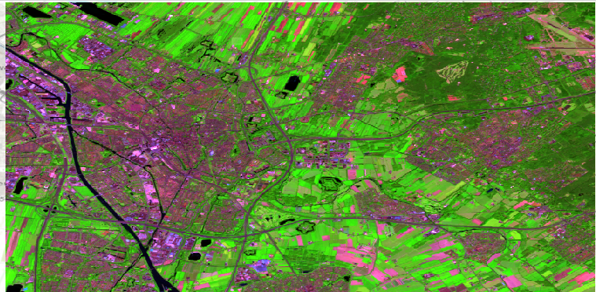
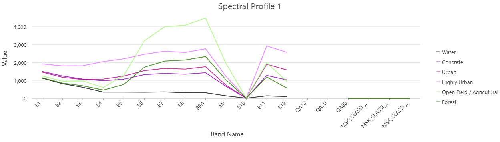
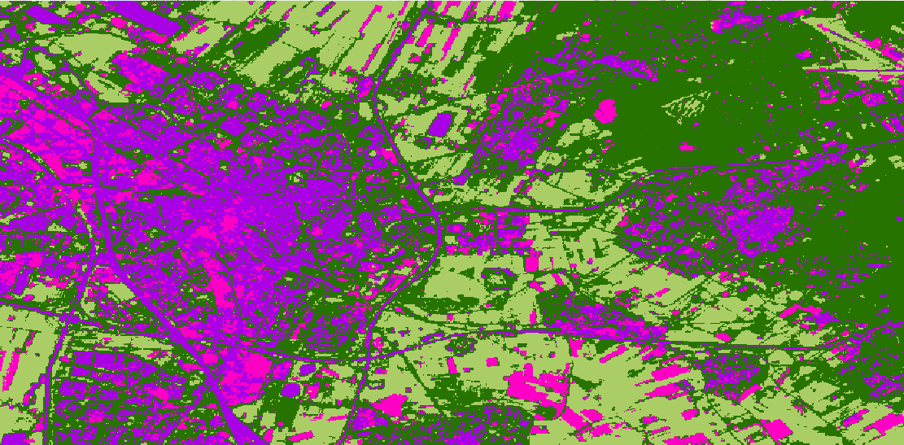
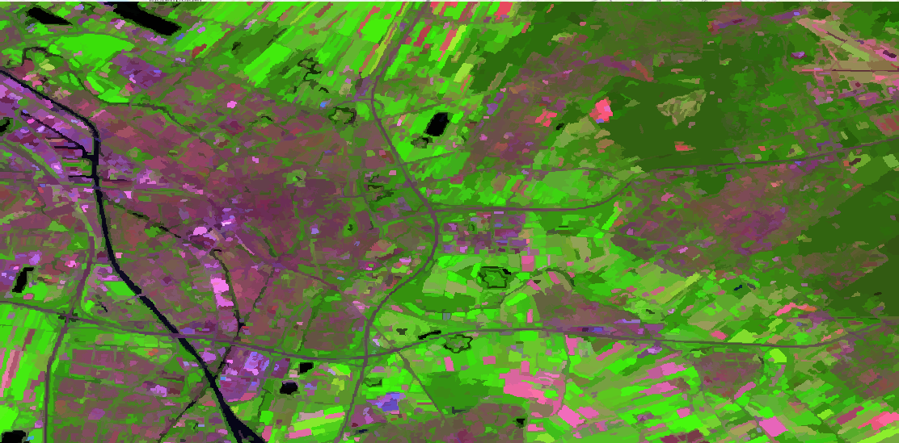
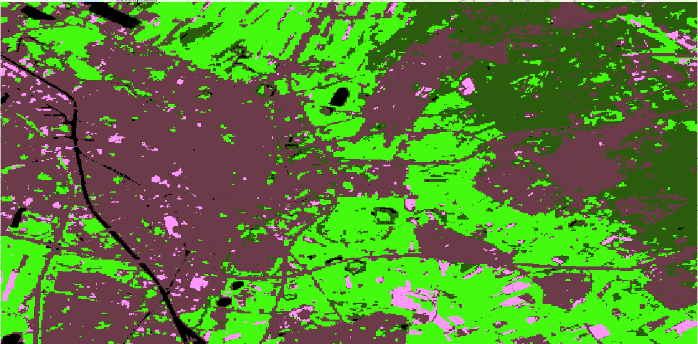
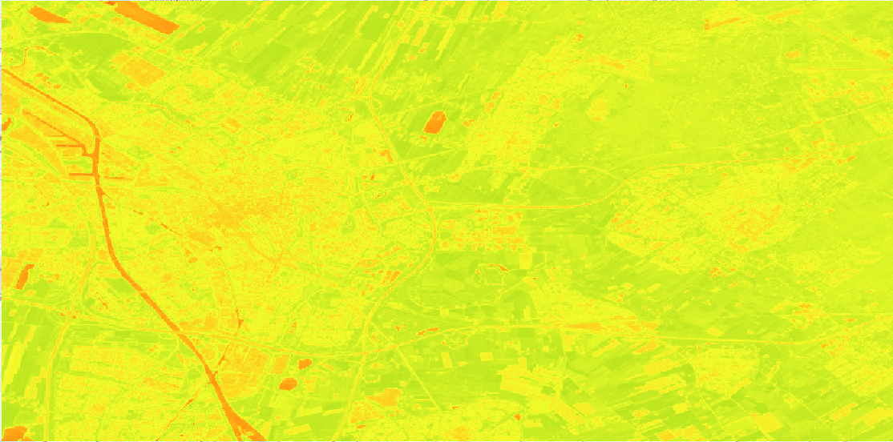
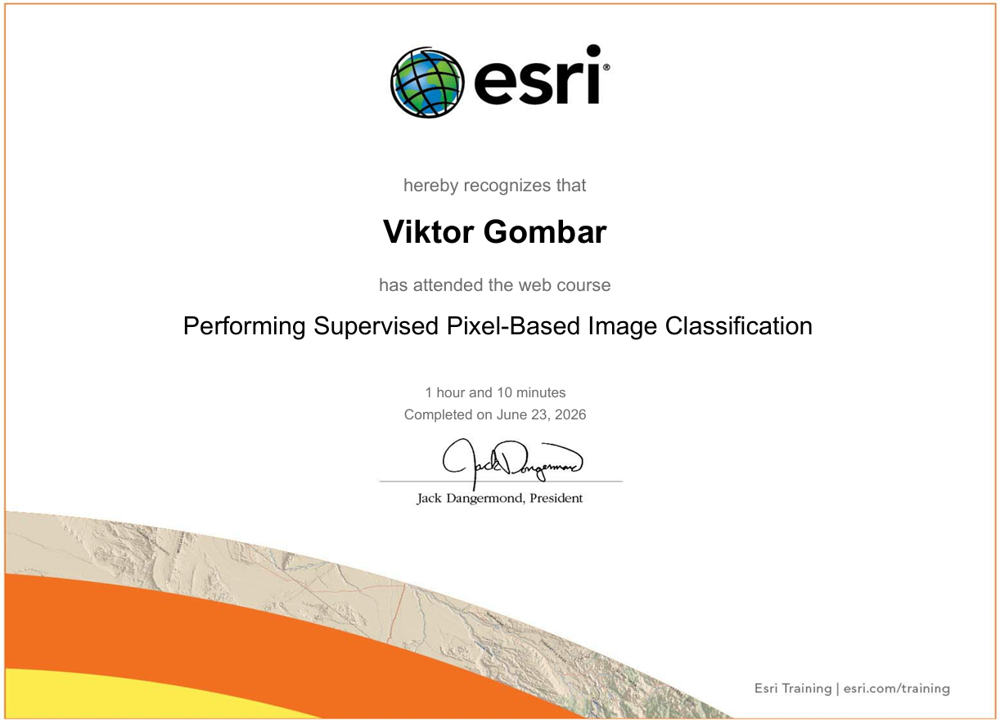

This project assessed how precise of a land cover classification can be automatically done using machine learning (ML). It tested both supervised ML and unsupervised ML, with the unsupervised ML being further split into pixel-based and object-based. The project used a Sentinel-2 data of Utrecht, adapted to the near-IR band configuration. Both supervised and unsupervised object-based analysis produced great results, with the unsupervised pixel-based classification somewhat lacking.

This projected aimed to test how accurate an automated land cover class analysis conducted using machine learning is, compared to its human alternative, since it could lead to automatisation and speeding up of the data anaylsis process if successful. Sentinel-2 satellite image of Utrecht was used, and the bands were set to short-wave IR (Red:B12, Green:B8A, Blue:B4), which shows vegetation density. This resulted in the map shown above.
Then, supervised and unsupervised classification was conducted. An unsupervised classification means that the machine has full control over how it defines a certain land cover class, and then human input can correct the class names afterwards. A supervised classification utilises a pre-recorder and pre-labeled test sample, and attempts to match the data on map to the test sample, recreating the human analysis. Therefore, a test sample was created for supervised classification
This section can explain:
Describe the GIS workflow and methods used.
Explain the major findings of the project. Discuss spatial patterns, environmental implications, or planning recommendations.

Spectral profile of selected land cover classes.

Unsupervised pixel-based classification

Unsupervised object-based classification

Supervised classification

NDVI map of Utrecht

ESRI Certificate
Discuss lessons learned, project limitations, and ideas for future improvements.
This section is useful for showing critical thinking, technical growth, and understanding of spatial analysis.